THREATS FACED BY TURTLES IN SRI LANKA
Turtles face various threats in their natural habitats and from human activities. Here are some common threats to turtles.
And also the world's seven sea turtle species are classified as follows according to the Red List of Threatened Species by the International Union for the Conservation of Nature (IUCN).
Pollution & Climate Change
Plastic and other marine debris: Turtles eat plastic, get caught in it,Turtles can ingest plastic bags, mistaking them for jellyfish, which can lead to internal blockages and death. have to wade through it in the water and on beaches, and microplastic can affect nests and hatchlings.
Rising temperatures increase sand temperatures, which can cause only females to be born. Climate change also impacts sea level rise, which can erode nesting beaches, and cause coral bleaching, an important habitat for hawksbills.
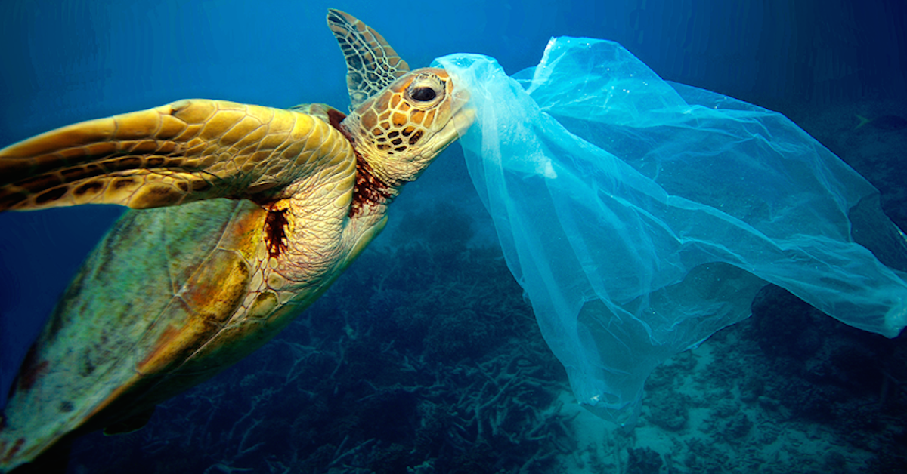
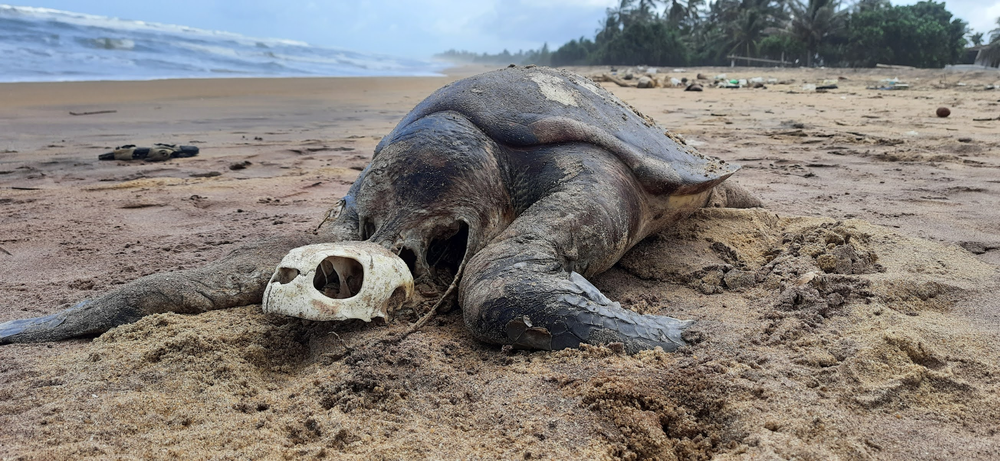
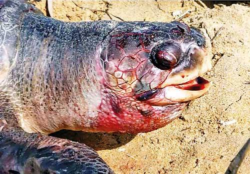
How We Can Prevent
Reducing Pollution: Reducing pollution, especially in aquatic environments, is essential for the well-being of turtles. Proper waste management, reducing the use of plastics, and controlling chemical runoff can help mitigate the impact of pollution on turtles and their habitats.
Research and Monitoring: Conducting scientific research and monitoring programs can provide valuable data on turtle populations, migration patterns, and threats they face. This information is essential for developing effective conservation strategies.
Support Conservation Organizations: Support local and international organizations working towards turtle conservation through donations or volunteering. These organizations play a significant role in implementing conservation projects and lobbying for protective measures.
Illegal Wildlife Trade And Coastal development & Predators
Turtle eggs are considered to be an aphrodisiac in many places (with no basis in science) and their meat (primarily green turtles) is still consumed, even though both are illegal in most countries.
Building on nesting beaches, mangroves, and other important coastal areas can affect turtles ability to nest and feed and prevent hatchlings from surviving.
Turtles are often targeted for the illegal wildlife trade. Their eggs, meat, and shells are highly sought after, especially in certain cultures for food, traditional medicine, or ornamental purposes. The illegal trade puts immense pressure on turtle populations, particularly in Southeast Asia and other regions where the demand is high.
The introduction of invasive species, such as predators or competitors, can negatively impact turtle populations. For example, the introduction of predators like feral pigs, dogs, or rats on nesting beaches can destroy turtle nests and consume eggs, leading to population declines.
 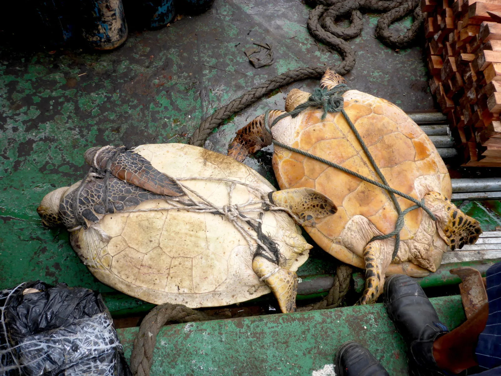
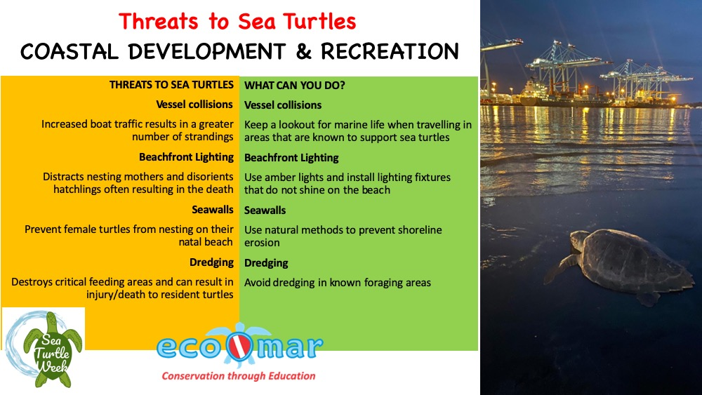
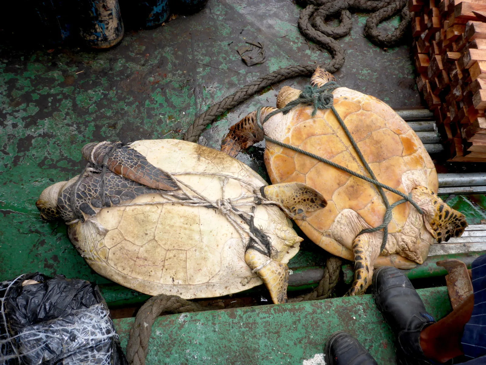
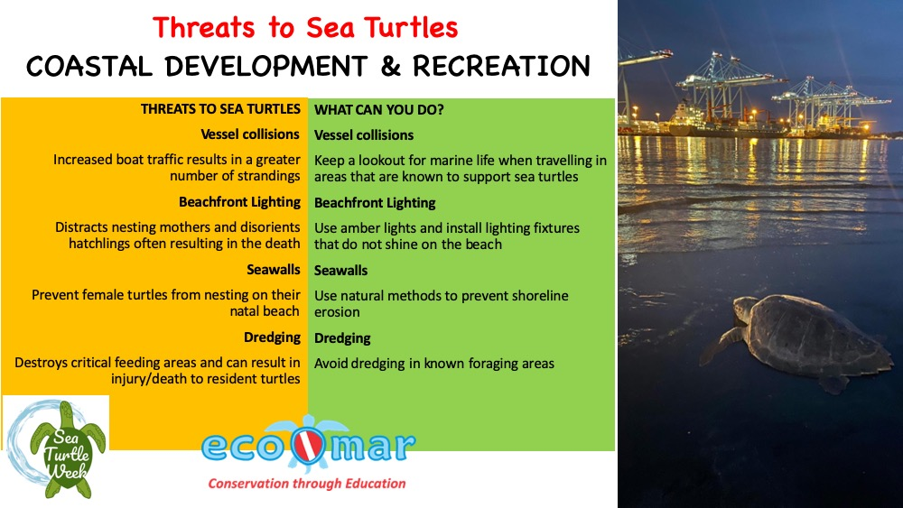
How We Can Prevent
Curbing Wildlife Trade: Illegal wildlife trade poses a significant threat to turtles. Enforcing strict regulations and penalties for the trade and consumption of turtles and their products can help reduce this threat.
Habitat Protection: Protecting and preserving the natural habitats of turtles is crucial. This includes conserving nesting beaches, wetlands, and other critical ecosystems where turtles reside.
Nesting Site Management: Implementing measures to protect nesting sites is vital. This can involve restricting human access to nesting areas, marking and monitoring nests, and implementing measures to prevent disturbance or destruction of nests.
 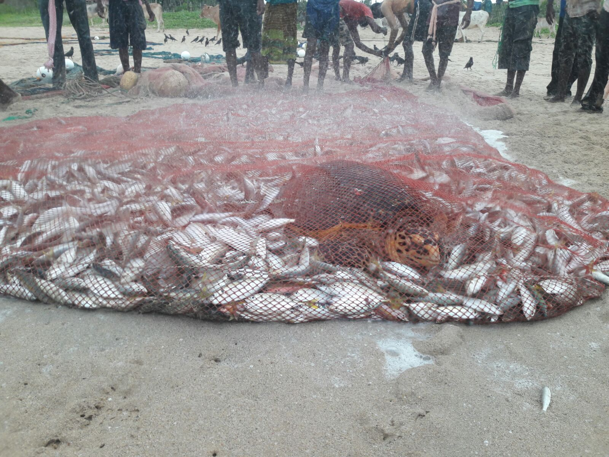
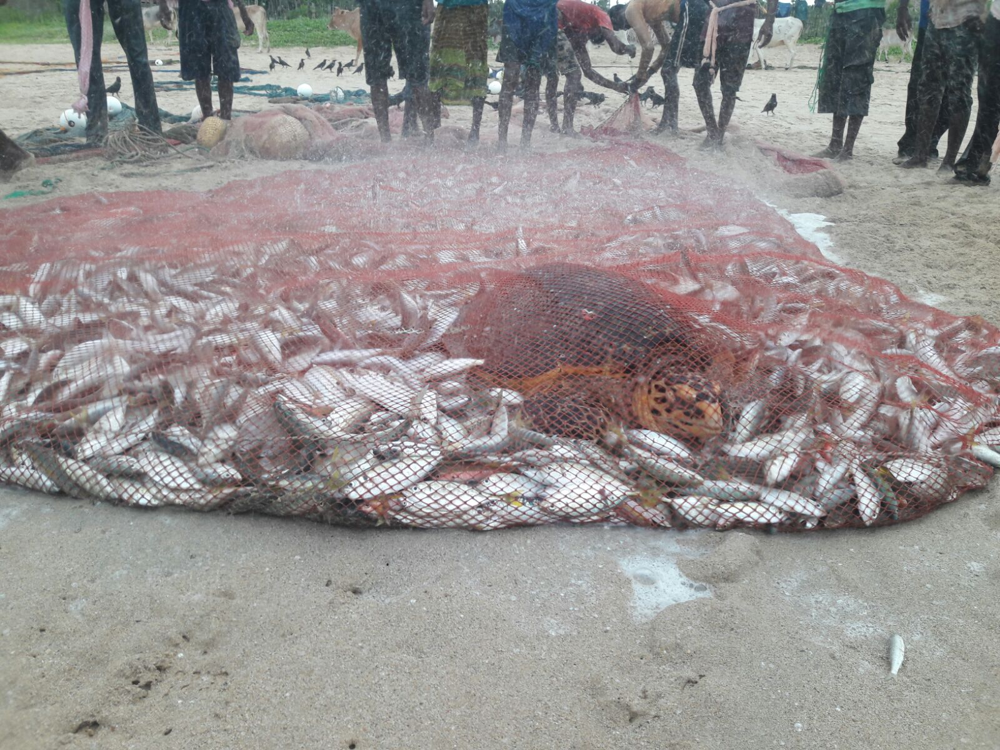
 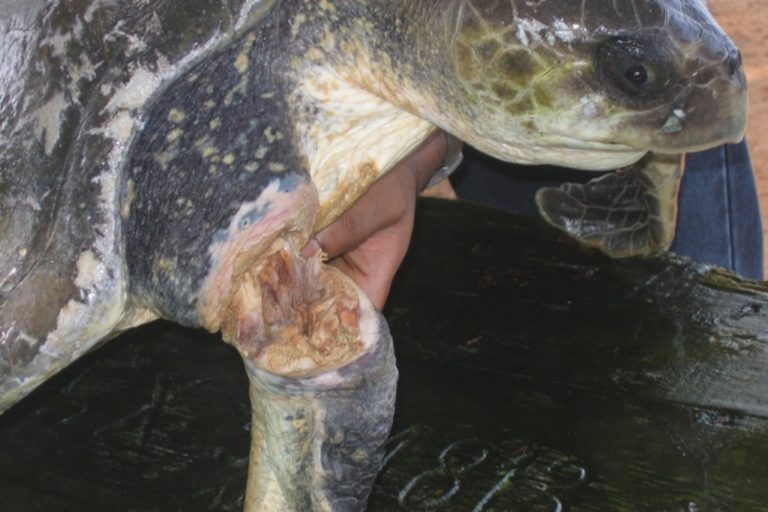
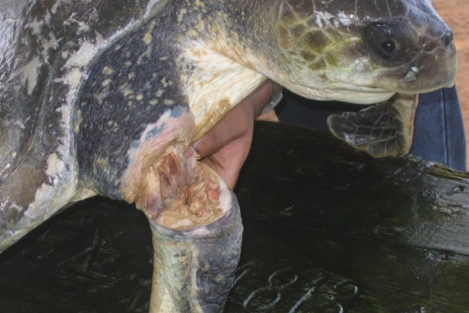